Docker primeiros passos
O que é docker ?,docker é uma plataforma para criação, execução e deploy de containers, ele é um projeto open source escrito em go e hospedado no github.
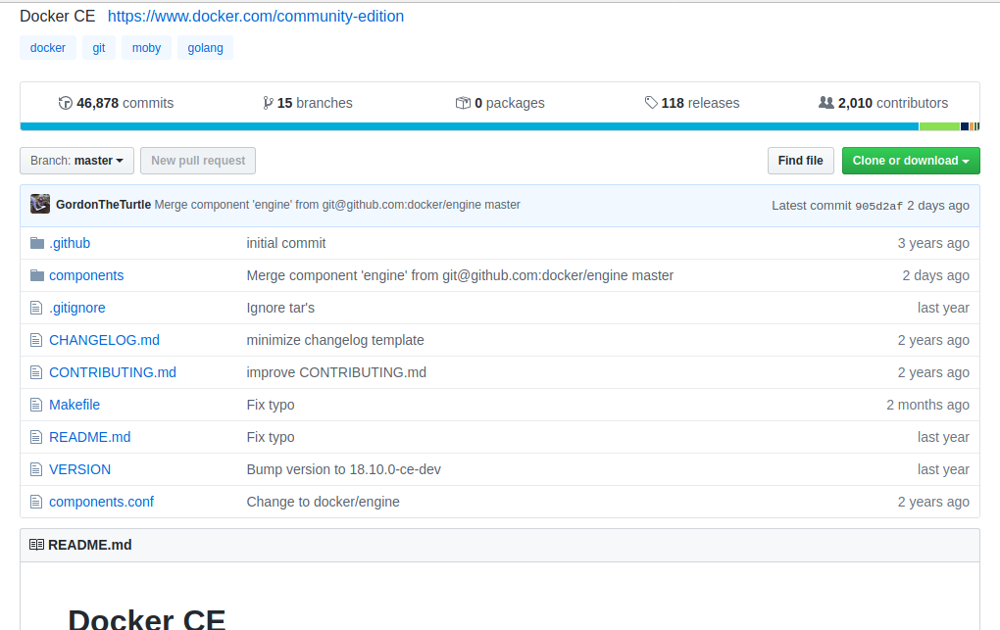
no github podemos encontrar muitas informações sobre o projeto como por exemplo o que será implementado no futuro no software, changelog de versões e muitas outras informações, abaixo podemos ver o changelog da versao 19.03.5 (2019-11-13) última de 2019.
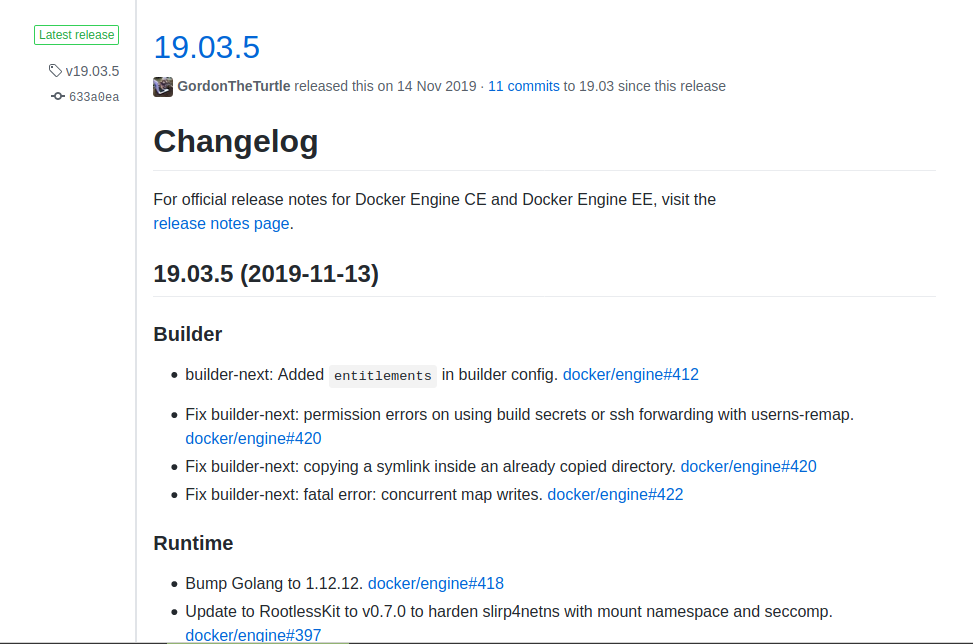
Existem varias formas de fazer a instalação do docker irei mostrar a vc’s como fazer a instalação via um script shell que automatiza esta tarefa para varias distribuições linux, ele esta disponibilizado de forma open source no github neste endereço docker script instalação.
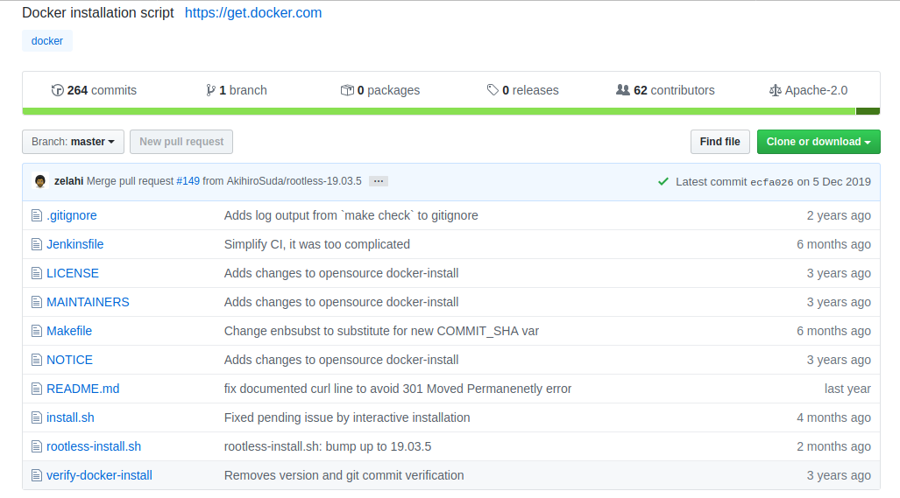
Agora tudo que precisamos e um terminal linux para fazer a instalação.
Abaixo o comando ira baixar o script pra sua maquina, eu estou baixando na minha area de trabalho mas vc pode colocar em qualquer lugar. 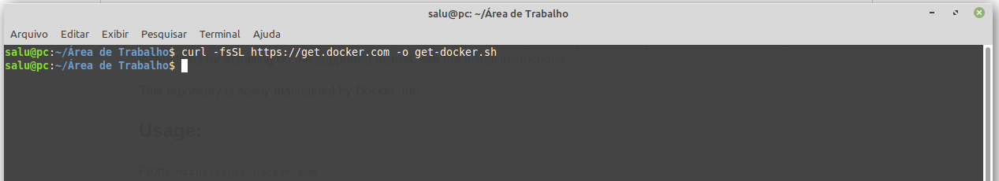
Agora vamos executando o script. 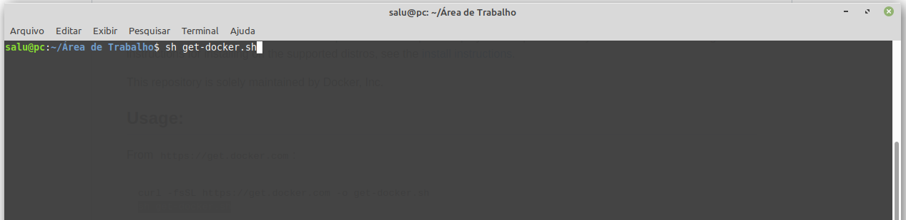
Dependendo da sua internet a instalação pode demorar um pouco. 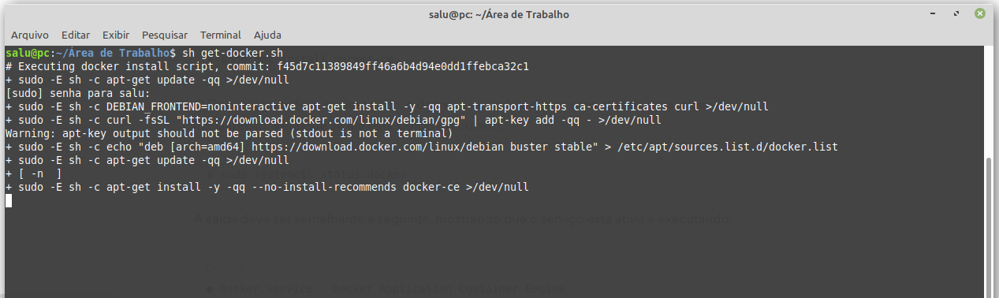
Após o download e instalação do docker teremos a seguinte saida.
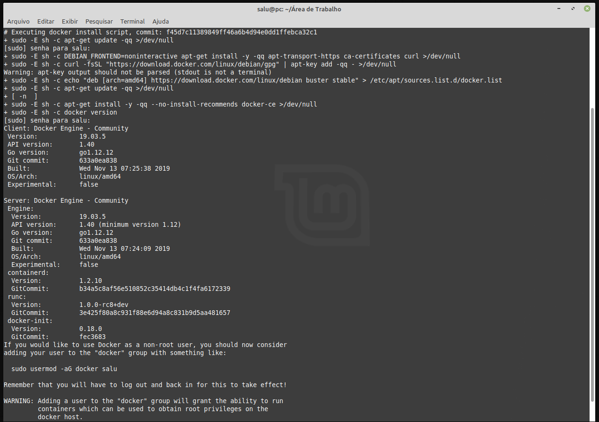
E pronto já temos o docker instalado e rodando em nossa maquina, para facilitar nossa vida vamos incluir nosso usuario no grupo do docker (isso é necessário para conseguir usar o comando docker sem sudo) se vc observou bem o comando necessário para isso está no final da imagem acima.
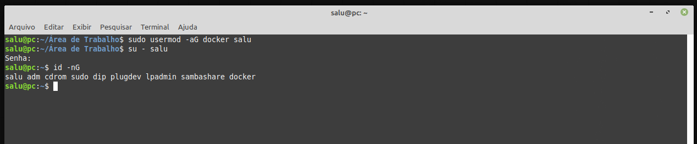
Podemos ver se docker está realmente instalado com seguinte comando.
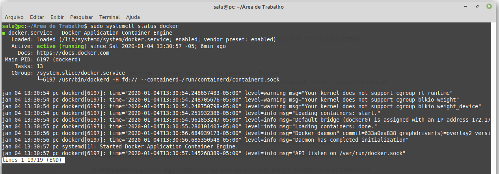
Se digitarmos somente o comando docker no terminal poderemos ver um help com todos as suas opções e subcomandos.
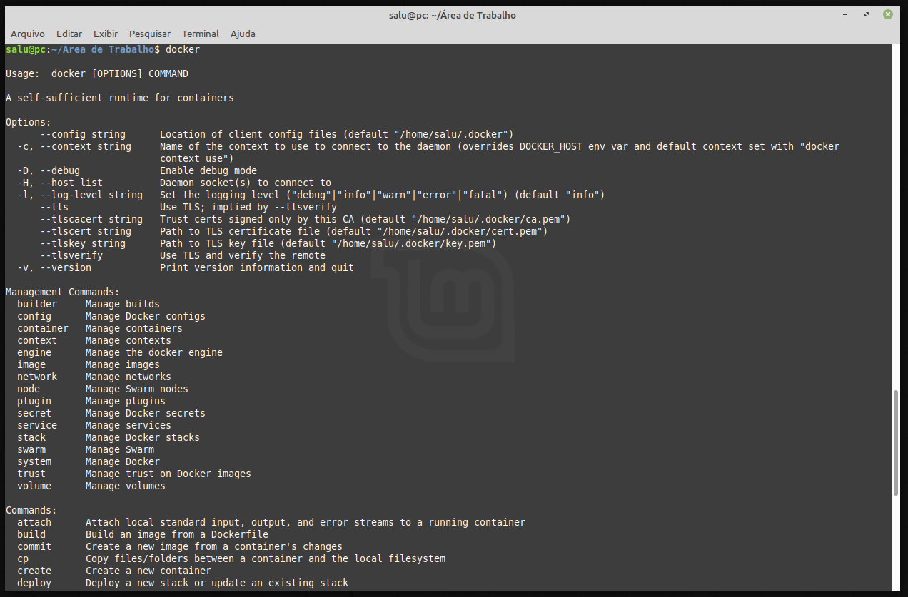
Um outro comando interessante é o docker info que retorna informações gerais sobre o docker instalado.
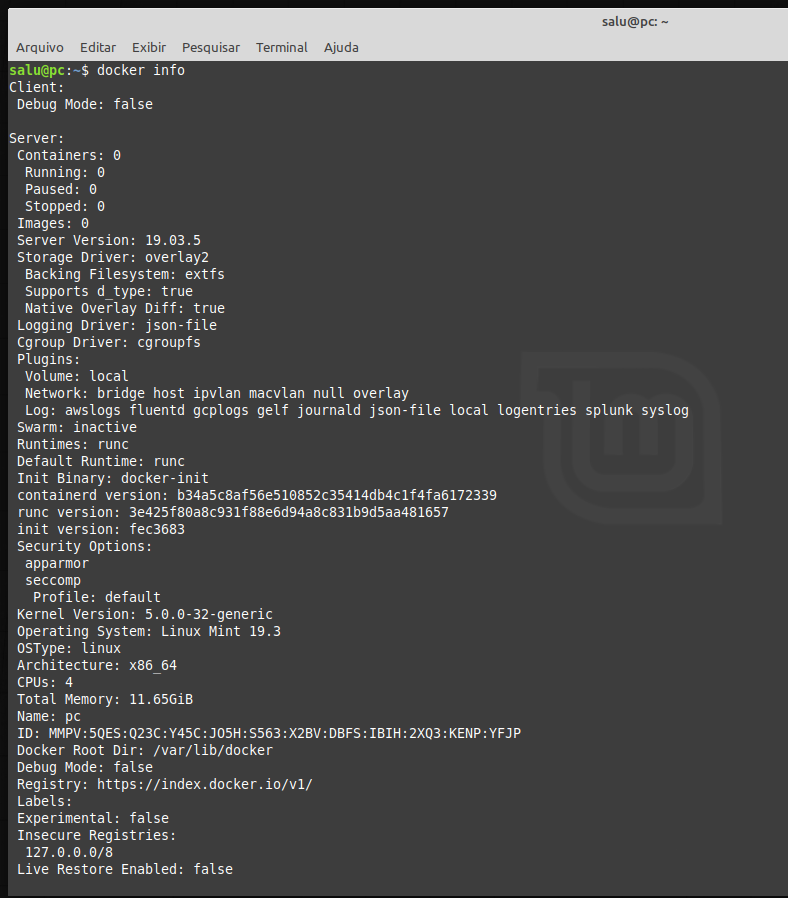
Agora que ja passamos pela instalação e ja confirmamos que o docker esta rodando vamos faze o famoso “helloWorld” com docker.
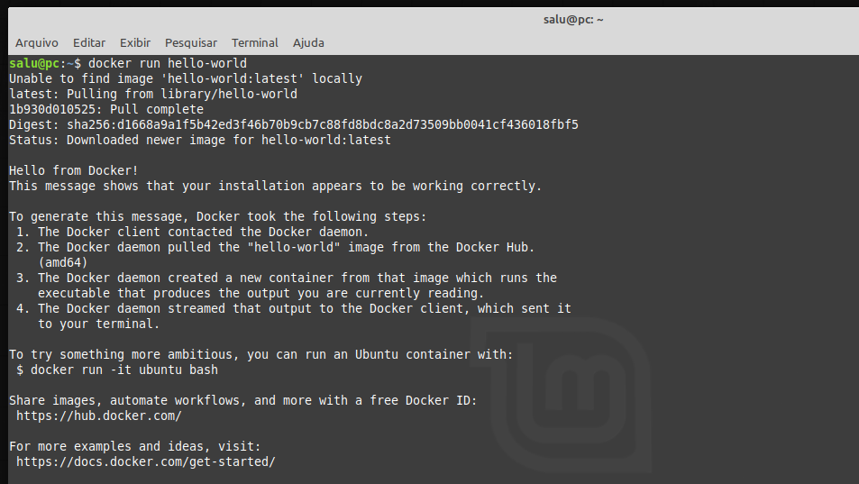
Comandos Basicos
- docker version - verifica a versão do Docker.
- docker image inspect - traz detalhes de determinada imagem.
- docker image ls - lista as imagens presente no host.
- docker image rm - remove uma imagem.
- docker images - conecta no container.
- docker container run - executa um container.
- docker container ls - lista os container em execução.
- docker container inspect - traz detalhes de determinado container.
- docker container ls -a - lista todos os containers, inclusive os parados.
- docker container stop - para um container.
- docker container start - inicia um container.
- docker container restart - restart de um container.
- docker container rm - remove um container.
- docker container rm -f - remove um container em execução.
- docker container top - traz os processos em execução.
- docker container stats - traz informações sobre o consumo de recursos do container.
- docker container exec - executa algo no container.
- docker container attach - conecta no container.
- docker ps - exibe todos os containers em execução.
- docker ps -a - exibe todos os containers criados.
- docker run -it NOME_IMAGEM - conecta o terminal que estamos utilizando com o do container.
- docker start ID_CONTAINER - inicia o container com id informado.
- docker stop ID_CONTAINER - interrompe o container com id em questão.